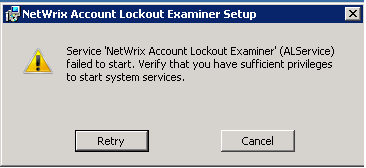

During installation of NetWrix Account Lockout Examiner on Windows 2003, a
"Service 'NetWrix Account Lockout Examiner' (ALService) failed to start"
message is received that the service cannot be started due to insufficient permissions. The
account in use is a domain admin.

NetWrix Account Lockout Examiner uses .NET Framework and requires .NET 3.5 SP1. The message appears if only NET 3.5 is installed.
Please make sure that .NET Framework 3.5 SP1 is installed. If it is installed, reinstall it or upgrade to .NET 4. Also:
NetWrix Account Lockout Examiner uses .NET Framework and requires .NET 3.5 SP1. The message appears if only NET 3.5 is installed.
Please make sure that .NET Framework 3.5 SP1 is installed. If it is installed, reinstall it or upgrade to .NET 4. Also:
- Verify that the account specified during installation is a local admin
- Check that there are no restrictive policies for this account to run services.
- Try entering another local admin or domain admin account during the installation.